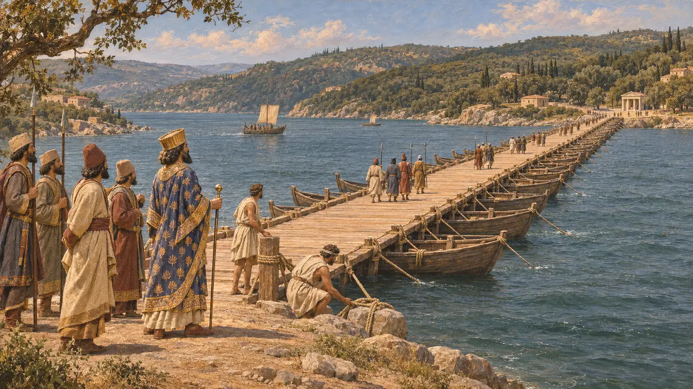
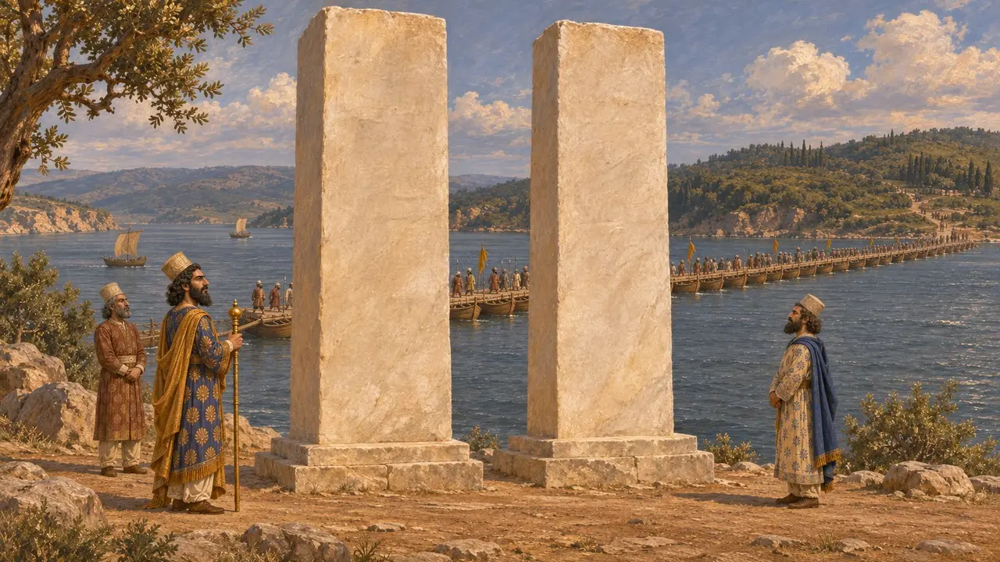
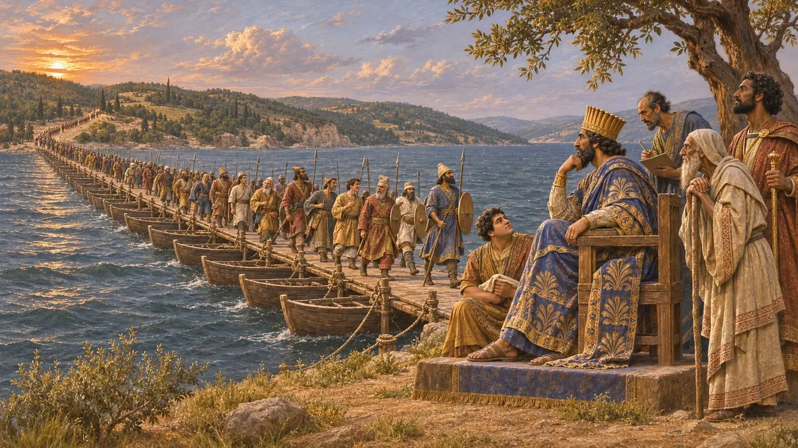
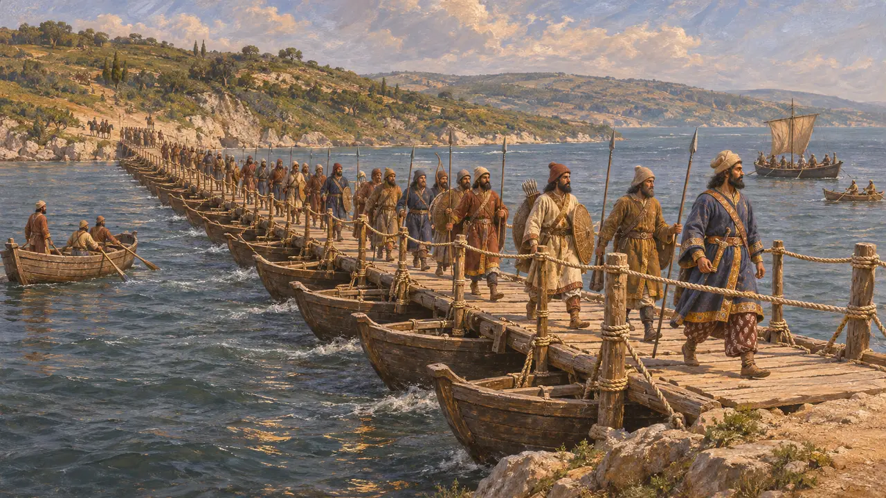
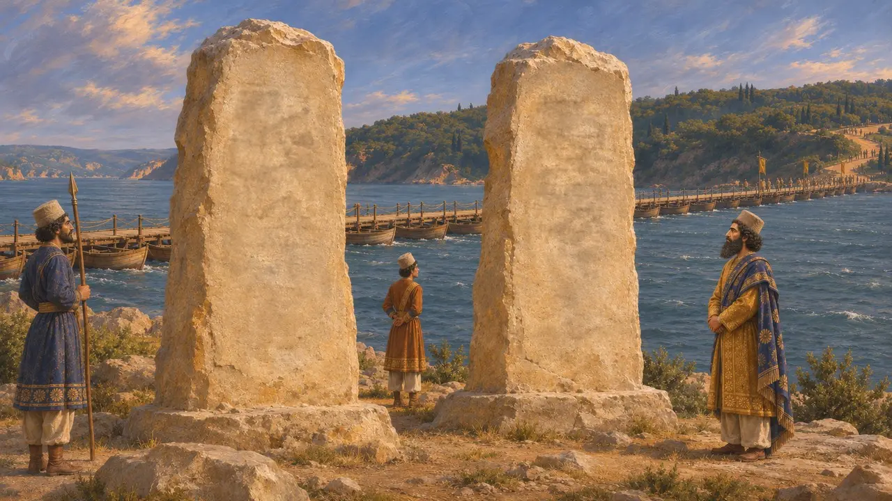

Enciclopédia › Batalhas e eventos

A construção da ponte sobre o Bósforo
A ponte de barcos de Dario entre a Ásia e a Europa, por volta de 513 AEC
No jogo: Nível 6: A Ponte de Barcos
No início de sua campanha contra os citas, por volta de 513 AEC, Dario mandou lançar uma ponte de barcos sobre o Bósforo para que seu exército pudesse marchar da Ásia para a Trácia. O engenheiro era um grego, Mândrocles de Samos. Heródoto é a principal fonte sobre a travessia. Xerxes faria uma ponte de barcos semelhante sobre o Helesponto uma geração depois.
No jogo: O jogo mostra Mândrocles lançando a ponte sobre o estreito, Dario observando o exército atravessar e os dois pilares inscritos, seguindo Heródoto 4.87-88. A data firme de 513 AEC é uma simplificação; o ano é apenas aproximado.

A travessia segundo Heródoto
Relato antigoHeródoto diz que Dario marchou de Susa até Calcedônia, navegou para ver o mar Negro e depois voltou à ponte que Mândrocles havia construído. Ele dá a largura do estreito, no ponto mais estreito, como quatro estádios, bem menos de um quilômetro. Pelas suas próprias contas, a ponte ficava mais ou menos a meio caminho entre Bizâncio e o templo na entrada do estreito. Enquanto isso, a frota jônia seguiu adiante para lançar uma ponte sobre o Istro.
Herodotus 4.85-89

Os dois pilares de pedra branca
Relato antigoSegundo Heródoto, Dario mandou erguer duas colunas de pedra branca junto ao Bósforo. Elas foram gravadas em letras assírias e gregas com os nomes de todos os povos de seu exército. Ele acrescenta que os bizantinos mais tarde levaram as pedras para dentro de sua cidade para um altar de Ártemis, deixando uma pedra coberta de letras assírias ao lado de um templo de Dioniso. Nenhum fragmento de qualquer das colunas foi encontrado.
Herodotus 4.87

O quadro de Mândrocles em Samos
Relato antigoHeródoto diz que Dario recompensou Mândrocles generosamente. Com parte da recompensa, o engenheiro pagou por uma pintura de toda a cena: a ponte, o exército a atravessá-la e o Rei sentado a observar. Ele a dedicou no templo de Hera, em Samos, com uma inscrição em versos que nomeava a si mesmo e a Dario, e que Heródoto cita.
Herodotus 4.88

Data, números e o silêncio persa
DisputadoHeródoto atribui a Dario 700.000 homens e 600 navios. Os historiadores tratam esses números como muito exagerados. O ano é incerto, e costuma-se situá-lo por volta de 513 ou 512. Nenhuma inscrição persa descreve a ponte, embora a inscrição do túmulo de Dario inclua os sakas de além-mar e Skudra entre suas terras, o que muitos estudiosos associam a esta campanha na Europa.
Herodotus 4.87; DNa; P. Briant, From Cyrus to Alexander, 2002

O que eram as cartas assírias
DisputadoA maioria dos estudiosos entende que as letras assírias de Heródoto significam escrita cuneiforme. Outros observam que escritores gregos também usavam a expressão para a escrita aramaica, como Tucídides faz ao falar de uma carta persa capturada. Se era cuneiforme, a língua poderia ter sido o acádio, o elamita ou o persa antigo, como nos outros monumentos de Dario. Como os pilares se perderam, o texto não pode ser comparado com as inscrições reais.
Thucydides 4.50; P. Briant, From Cyrus to Alexander, 2002
Fontes
- Herodotus 4.85-89
- DNa
- P. Briant, From Cyrus to Alexander, 2002
- Thucydides 4.50
- M. Waters, Ancient Persia: A Concise History of the Achaemenid Empire, 550-330 BCE, 2014